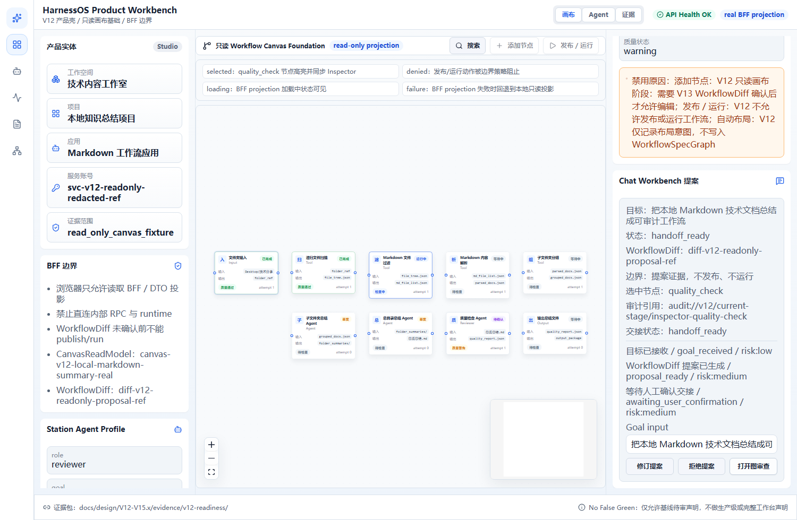
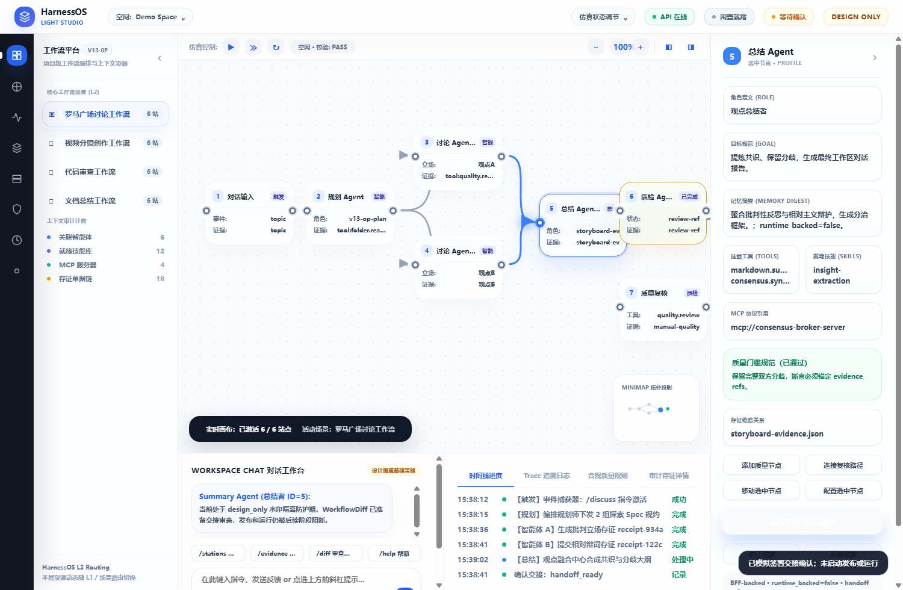
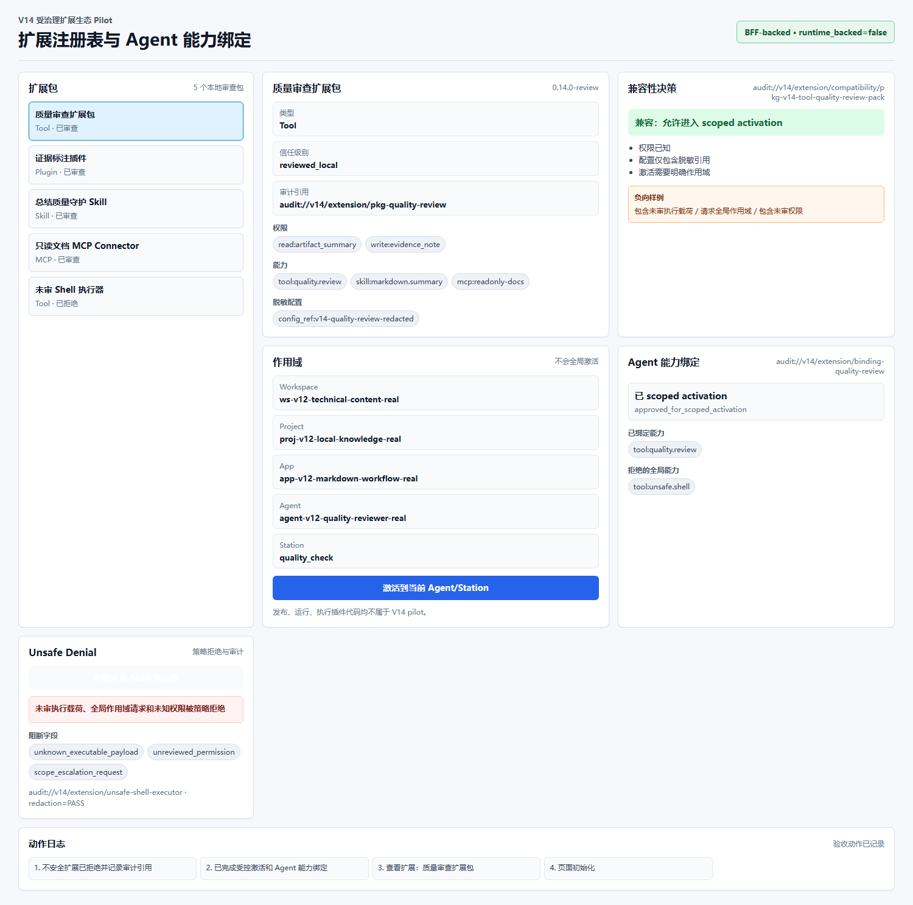
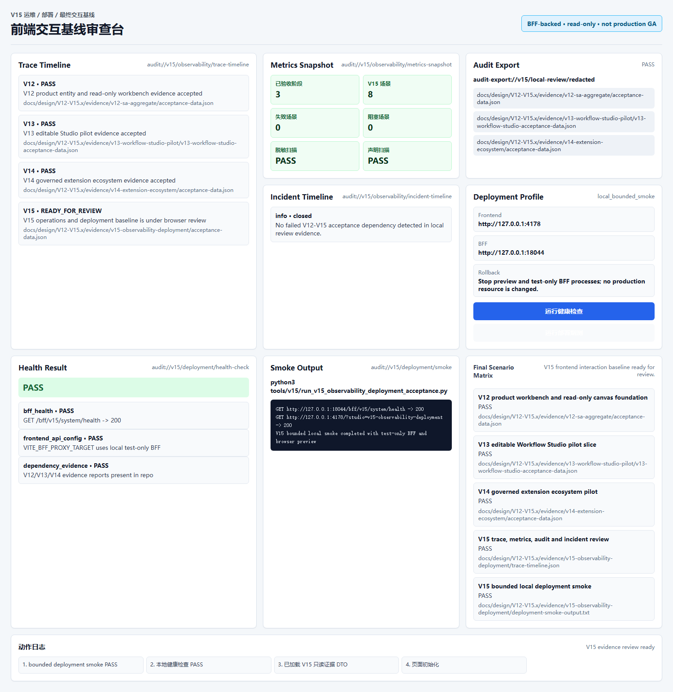
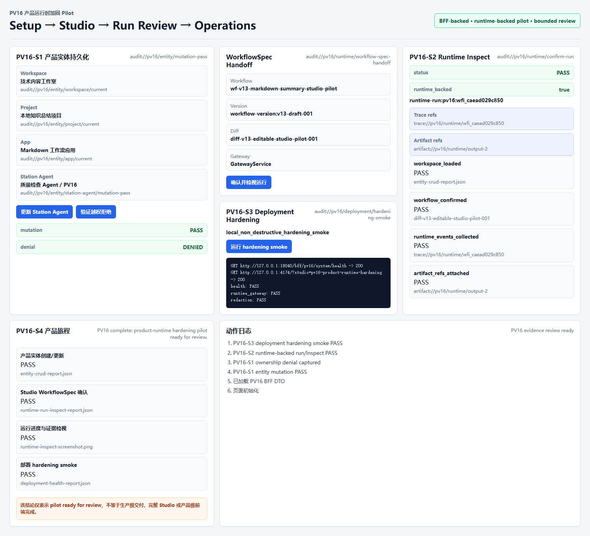

PASS
用户可查看实体侧栏、只读画布、Inspector、禁用动作原因和 WorkflowDiff handoff。

生成时间：2026-06-25T00:00:00+08:00 · 状态：PASS
本报告证明 V12-PV16 阶段页面可被人类审查，并覆盖只读画布、editable Studio pilot、扩展生态 pilot、观测与 bounded deployment smoke、PV16 product-runtime hardening pilot。报告不声明生产级交付、完整 Studio、Xpert parity、产品级前端完成或 Agent executor ready。
| 架构平面 | 目标 | 当前实现 | 状态 |
|---|---|---|---|
| Product Console / Mission Studio | 统一产品入口、Studio、Inspector、evidence browser | V12-PV16 有分阶段页面和一条 product-runtime pilot 旅程；尚未合并为完整产品入口 | PARTIAL |
| Canvas Workbench | 只读 foundation 到可编辑 Studio pilot | V12 只读画布 PASS；V13 add/connect/move/configure pilot PASS | PASS_BOUNDED |
| Product Entity Control | workspace/project/app/Station Agent durable mutation | PV16-S1 通过 BFF-only mutation、ownership denial 和 audit refs 证明 bounded pilot | PASS_BOUNDED |
| Runtime Gateway | 确认后 runtime-backed run/inspect | PV16-S2 通过 controlled runtime run/inspect refs 证明 bounded pilot；不代表 Agent executor ready | PASS_BOUNDED |
| Observability / Operations | trace/metrics/audit/deployment health | V15 bounded dashboard 和 local smoke PASS；不是生产 GA | PASS_BOUNDED |
| Deployment / Self-hosting | self-host profile、health、smoke、rollback | PV16-S3 本地 hardening smoke、health report 和 rollback notes PASS；不是生产部署 | PASS_BOUNDED |
| 场景 | 证据 | 状态 |
|---|---|---|
| 打开产品工作台并理解当前 workspace/project/app | V12 screenshot + route/network logs | PASS_BOUNDED |
| 体验工作流画布选择、Inspector、禁用动作说明 | V12/V13 browser automation screenshots | PASS_BOUNDED |
| 编辑 Studio pilot：添加、连接、移动、配置节点 | V13 browser automation + acceptance data | PASS_BOUNDED |
| 扩展包兼容性、scoped activation、unsafe denial | V14 browser automation + acceptance data | PASS_BOUNDED |
| 观察 trace/metrics/audit/incident 并运行 bounded smoke | V15 browser automation + acceptance data | PASS_BOUNDED |
| 持久化创建/更新实体 | PV16 browser automation + entity CRUD report + BFF route log | PASS_BOUNDED |
| 真实 runtime-backed run/inspect | PV16 runtime run inspect report + runtime screenshot + acceptance runner | PASS_BOUNDED |
| 产品运行时连续旅程 | PV16 product journey screenshot + UX hardening report | PASS_BOUNDED |
PASS
用户可查看实体侧栏、只读画布、Inspector、禁用动作原因和 WorkflowDiff handoff。

PASS
用户可添加、连接、移动、配置节点并确认 WorkflowDiff handoff；不发布、不运行。

PASS
用户可查看扩展包兼容性、执行 scoped activation、看到 unsafe package 被拒绝和 audit ref。

PASS
用户可查看 trace/metrics/audit/incident，执行本地 health check 和 bounded smoke。

PASS
用户可更新产品实体、看到 ownership denial、确认 runtime-backed run/inspect，并运行 bounded deployment hardening smoke。

| 检查 | 状态 | 耗时 | 命令 |
|---|---|---|---|
| Python runner syntax | PASS | 0.12s | python3 -m py_compile apps/workflow-console/e2e/bff_smoke_server.py tools/v12/run_v12_real_data_acceptance.py tools/v12/run_v12_remaining_stage_acceptance.py tools/v13/run_v13_workflow_studio_acceptance.py tools/v14/run_v14_extension_ecosystem_acceptance.py tools/v15/run_v15_observability_deployment_acceptance.py tools/post_v15/run_product_runtime_hardening_acceptance.py tools/v12_v15/run_full_frontend_acceptance_review.py |
| TypeScript test compile | PASS | 4.25s | node node_modules/typescript/bin/tsc -p tsconfig.test.json |
| Workflow console build | PASS | 15.15s | node node_modules/vite/bin/vite.js build |
| Unit tests | PASS | 1.77s | bash -lc node --test dist-test/__tests__/*.test.js |
| Browser scenario automation (headless) | PASS | 4.84s | Chrome CDP headless + node e2e/full_frontend_acceptance_review.mjs |
| V12 real-data acceptance | PASS | 5.28s | python3 tools/v12/run_v12_real_data_acceptance.py |
| V12 remaining-stage acceptance | PASS | 6.56s | python3 tools/v12/run_v12_remaining_stage_acceptance.py |
| V13 Studio acceptance | PASS | 32.53s | python3 tools/v13/run_v13_workflow_studio_acceptance.py |
| V14 extension acceptance | PASS | 21.86s | python3 tools/v14/run_v14_extension_ecosystem_acceptance.py |
| V15 observability/deployment acceptance | PASS | 20.22s | python3 tools/v15/run_v15_observability_deployment_acceptance.py |
| PV16 product-runtime hardening acceptance | PASS | 0.27s | python3 tools/post_v15/run_product_runtime_hardening_acceptance.py |
PASS
{
"schema_version": "v12.remaining_stage_acceptance_data.v1",
"stage_id": "V12-SA",
"status": "PASS",
"evidence_scope": "aggregate_reconciliation",
"runtime_backed": false,
"browser_backed": true,
"bff_backed": true,
"dto_backed": true,
"design_only_used_as_browser_evidence": false,
"xpert_reference_used_as_harnessos_evidence": false,
"scenario_results": [
{
"scenario_id": "US-V12-SA",
"status": "PASS",
"user_visible_result": "Reviewer sees V12 claim-to-evidence reconciliation and deferred V13-V15 scope.",
"evidence_refs": [
"docs/design/V12-V15.x/evidence/v12-sa-aggregate/browser-screenshot.png",
"docs/design/V12-V15.x/evidence/v12-sa-aggregate/bff-route-log.json"
]
}
],
"required_artifacts": {
"acceptance_data": {
"path": "docs/design/V12-V15.x/evidence/v12-sa-aggregate/acceptance-data.json",
"status": "PRESENT"
},
"browser_screenshot": {
"path": "docs/design/V12-V15.x/evidence/v12-sa-aggregate/browser-screenshot.png",
"status": "PRESENT"
},
"browser_network_log": {
"path": "docs/design/V12-V15.x/evidence/v12-sa-aggregate/browser-network-log.json",
PASS
{
"schema_version": "v13.workflow_studio_acceptance_data.v1",
"stage_id": "V13-SA",
"status": "PASS",
"evidence_scope": "aggregate_reconciliation",
"runtime_backed": false,
"browser_backed": true,
"bff_backed": true,
"dto_backed": true,
"workflow_spec_graph": {
"status": "PASS",
"evidence_ref": "workflow-spec-graph.json"
},
"workflow_diff_proposal": {
"status": "PASS",
"evidence_ref": "workflow-diff-proposal.json"
},
"graph_roundtrip": {
"status": "PASS",
"evidence_ref": "graph-roundtrip-report.json"
},
"browser_boundary": {
"status": "PASS",
"evidence_ref": "browser-network-log.json"
},
"confirmation_boundary": {
"status": "PASS",
"evidence_ref": "confirmation-transcript.txt"
},
"scenario_results": [
{
"scenario_id": "V13-S1",
"status": "PASS",
"user_visible_result": "WorkflowSpecGraph 通过 BFF 获取并完成合法/非法图校验。",
"evidence_refs": [
"workflow-spec-graph.json",
"graph-roundtrip-report.json"
]
},
{
"scenario_id": "V13-S2",
"status": "PASS",
"user_visible_result": "用户可在浏览器画布添加、移动、连接、配置节点，并体验 L1/L2、缩放、拖拽、聊天、仿真卡口。",
"evidence_refs": PASS
{
"schema_version": "v14.extension_ecosystem_acceptance_data.v1",
"stage_id": "V14-SA",
"status": "PASS",
"evidence_scope": "aggregate_reconciliation",
"runtime_backed": false,
"browser_backed": true,
"bff_backed": true,
"dto_backed": true,
"manifest_validation": {
"status": "PASS",
"evidence_ref": "plugin-manifest.json"
},
"compatibility_decision": {
"status": "PASS",
"evidence_ref": "compatibility-decision.json"
},
"scoped_activation": {
"status": "PASS",
"evidence_ref": "activation-decision.json"
},
"unsafe_denial": {
"status": "PASS",
"evidence_ref": "unsafe-package-denial.json"
},
"browser_boundary": {
"status": "PASS",
"evidence_ref": "browser-network-log.json"
},
"scenario_results": [
{
"scenario_id": "V14-S1",
"status": "PASS",
"user_visible_result": "审查者可查看扩展包、兼容性状态、权限、脱敏配置和 audit ref。",
"evidence_refs": [
"plugin-manifest.json",
"compatibility-decision.json",
"negative-compatibility-fixtures.json"
]
},
{
"scenario_id": "V14-S2",
"status": "PASS",
"user_visible_result": "审查者可将已审查能力激活到指定 Agent/Station 作用域。",
PASS
{
"schema_version": "v15.observability_deployment_acceptance_data.v1",
"stage_id": "V15-SA",
"status": "PASS",
"evidence_scope": "aggregate_reconciliation",
"runtime_backed": false,
"browser_backed": true,
"bff_backed": true,
"dto_backed": true,
"observability_review": {
"status": "PASS",
"evidence_ref": "trace-timeline.json"
},
"deployment_smoke": {
"status": "PASS",
"evidence_ref": "deployment-smoke-output.txt"
},
"final_scenario_matrix": {
"status": "PASS",
"evidence_ref": "final-scenario-matrix.json"
},
"browser_boundary": {
"status": "PASS",
"evidence_ref": "browser-network-log.json"
},
"scenario_results": [
{
"scenario_id": "V15-S1",
"status": "PASS",
"user_visible_result": "用户可查看只读 trace、metrics、audit 和 incident evidence。",
"evidence_refs": [
"trace-timeline.json",
"metrics-snapshot.json",
"observability-dashboard-screenshot.png"
]
},
{
"scenario_id": "V15-S2",
"status": "PASS",
"user_visible_result": "用户可运行本地健康检查和 bounded deployment smoke，并看到具体输出。",
"evidence_refs": [
"health-check-result.json",
"deploymePASS
{
"schema_version": "post_v15.product_runtime_hardening_acceptance_data.v1",
"stage_id": "PV16-SA",
"status": "PASS",
"evidence_scope": "aggregate_reconciliation",
"runtime_backed": true,
"browser_backed": true,
"bff_backed": true,
"dto_backed": true,
"durable_entity_mutation": {
"status": "PASS",
"evidence_ref": "entity-crud-report.json"
},
"runtime_run_inspect": {
"status": "PASS",
"evidence_ref": "runtime-run-inspect-report.json"
},
"deployment_smoke": {
"status": "PASS",
"evidence_ref": "deployment-smoke-output.txt"
},
"product_runtime_journey": {
"status": "PASS",
"evidence_ref": "ux-hardening-report.json"
},
"browser_boundary": {
"status": "PASS",
"evidence_ref": "browser-network-log.json"
},
"scenario_results": [
{
"scenario_id": "PV16-S1",
"status": "PASS",
"user_visible_result": "用户可更新产品实体并看到 audit refs，同时越权 mutation 被拒绝。",
"evidence_refs": [
"entity-crud-report.json",
"bff-route-log.json"
]
},
{
"scenario_id": "PV16-S2",
"status": "PASS",
"user_visible_result": "用户可确认 WorkflowSpec 运行并检视 runtime-backed refs。",
"evidPASS
{
"schema_version": "post_v15.product_runtime_hardening_acceptance_report.v1",
"status": "PASS",
"stage_id": "PV16-SA",
"evidence_dir": "docs/design/V12-V15.x/evidence/post-v15-product-runtime-hardening",
"missing_artifacts": [],
"schema_results": [
{
"status": "PASS",
"data": "docs/design/V12-V15.x/evidence/post-v15-product-runtime-hardening/acceptance-data.json",
"schema": "docs/design/V12-V15.x/schemas/post_v15_product_runtime_hardening_acceptance_data.schema.json",
"reason": ""
},
{
"status": "PASS",
"data": "docs/design/V12-V15.x/evidence/post-v15-product-runtime-hardening/artifact-manifest.json",
"schema": "docs/design/V12-V15.x/schemas/post_v15_product_runtime_hardening_artifact_manifest.schema.json",
"reason": ""
}
],
"browser_boundary": {
"status": "PASS",
"forbidden_matches": []
},
"runtime_evidence": {
"status": "PASS",
"missing_fields": [],
"runtime_backed": true
},
"deployment_smoke": {
"status": "PASS",
"has_command": true,
"has_health": true
},
"stage_results": {
"status": "PASS",
"missing_stage_ids": [],
"failing_stage_ids": [],
PV16_BOUNDED_PILOT_READY_FOR_REVIEW
{
"report_name": "post_v15_document_support_audit_report",
"generated_on": "2026-06-25",
"status": "PV16_BOUNDED_PILOT_READY_FOR_REVIEW",
"supports": {
"bounded_v12_v15_acceptance": true,
"pv16_planning": true,
"direct_pv16_implementation": true,
"pv16_bounded_exit_acceptance": true,
"complete_target_prd": false,
"production_ready": false
},
"accepted_baseline": {
"v12": "product entity, browser workbench and read-only canvas foundation ready for review",
"v13": "editable Workflow Studio pilot slice ready for review",
"v14": "governed extension ecosystem pilot ready for review",
"v15": "frontend interaction baseline ready for review"
},
"post_v15_required_closures": [
"durable product entity mutation with audit refs",
"runtime-backed workflow run and inspect evidence",
"self-hosting smoke hardening with actual command output",
"product-runtime journey interaction hardening",
"PV16 schemas and acceptance runner",
"PV16 readiness audit with no open fatal or major findings"
],
"blocking_findings": [],
"closed_findings": [
{
"id": "PV16-DOC-001",
"severity": "major",
"status": "c允许声明：V12 complete: product entity, browser workbench and read-only canvas foundation ready for review. / V13 complete: editable Workflow Studio pilot slice ready for review. / V14 complete: governed extension ecosystem pilot ready for review. / V15 complete: frontend interaction baseline ready for review. / PV16 complete: product-runtime hardening pilot ready for review.
禁止声明：production ready / Xpert parity complete / product-grade frontend complete / complete Workflow Studio ready / Agent executor ready
所有 runtime-backed=false 的阶段在报告中保持原样展示，未把设计证据、截图或 bounded smoke 伪装为生产运行证据。